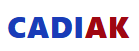
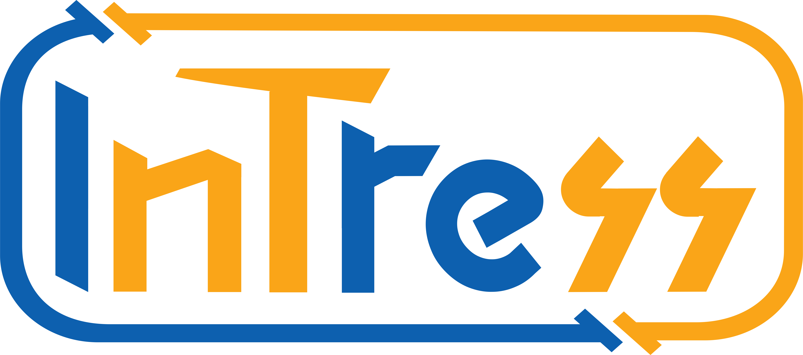

AppHub
Gerbang utama untuk mengakses dan menjembatani website Microservice Kanwil DJPb SumBar.

analytics
CADIAK
Platform monitoring data Transfer Ke Daerah (TKD) Provinsi Sumatera Barat meliputi data DAU, DBH, DAK, dan Dana Desa.
Buka Aplikasi
group
Portal CRM
Manajemen hubungan pelanggan tersentralisasi. Lacak interaksi dan tingkatkan konversi dari berbagai sumber web.

account_balance
Pojok Treasury
Dashboard yang ada di Perpustakaan Universitas Andalas untuk melihat bagaimana penyebaran dana APBN, TKD, dan KUR di Provinsi Sumatera Barat.
Buka Aplikasi